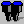

There are two ways to find a word in the vocabulary editor. You can use the Find  button, or simply just type the letters of the word into the view. It will automatically scroll into view and be selected.